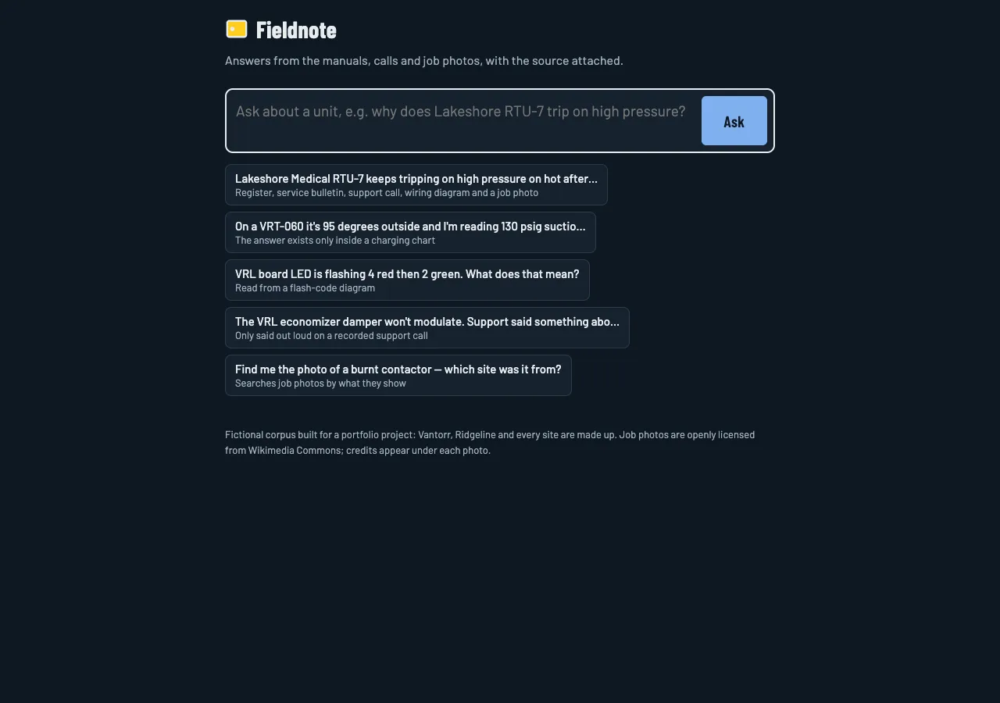
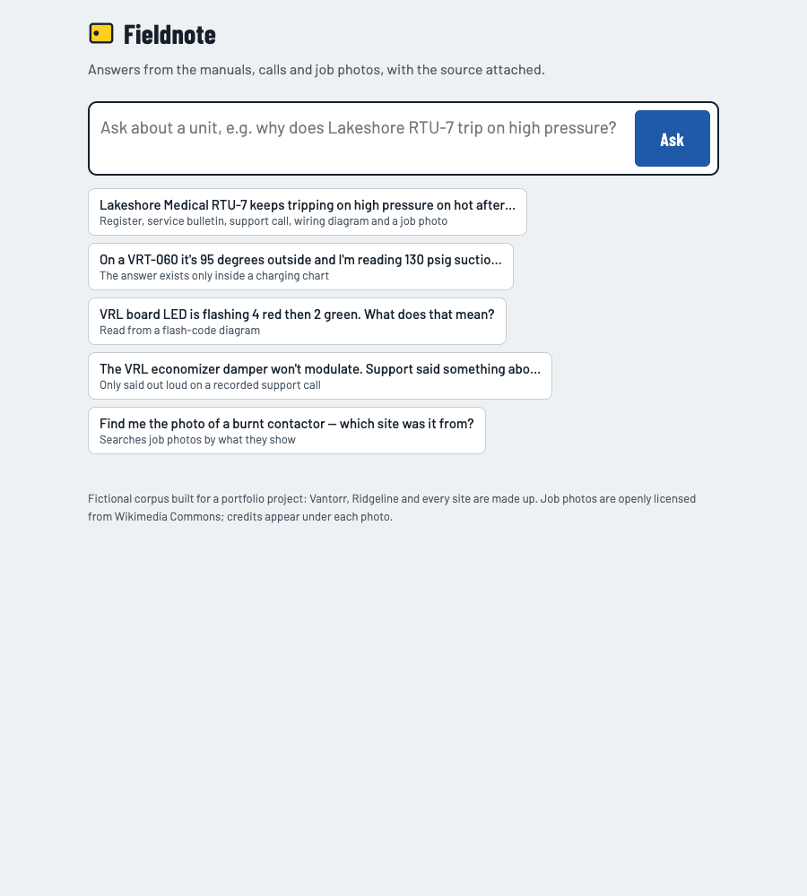

Screens
What a technician sees


Ask a question on a roof and get a short answer where every claim links to evidence you can check: the cropped chart from the manual, the ten seconds of a support call where the fix was said, or the job photo of the failed part.

image-only questions answered correctly, shipped system vs caption-only baseline (mean of 3 runs)
recall@10 on image-only questions, vs 0.47 with one shared embedding space
p95 end-to-end latency at k = 20, including the vision model call
p95 retrieval latency for four searches, rank fusion and evidence packing
A technician's knowledge lives in three places that look nothing alike. Equipment manuals hide the answer in charts and tables. Job-site photos carry visual evidence with no text beyond a job number. Recorded support calls hold the fix that someone said once and never wrote down.
Text-only RAG misses most of this. Fieldnote retrieves across all three with a specialist encoder per modality, merges the results by rank, and has a vision model answer from the actual pixels. Every claim in the answer is tagged with its source so the technician can check it.
Offline, each source type goes through the encoder that suits it. Online, a question is scoped to the right equipment, searched four ways, fused, and answered from an evidence pack of real pixels and transcripts.
Retrieval is scored without any LLM. Answer accuracy on the 15 image-only questions is the mean of three runs per system.
15 questions whose answer exists only in a figure.
Mean of 3 runs. Range in brackets.
Caption-only retrieval finds the right figure almost as often as the hybrid (0.93 vs 1.00), but answering from the caption loses the exact value on the curve. The shipped system retrieves with the caption and answers from the image.
The single biggest retrieval lesson was structural: putting everything in one embedding space cut recall@20 from about 0.95 to 0.58.
| Retrieval setup | Image-only R@10 | All R@10 | All R@20 | MRR |
|---|---|---|---|---|
| Hybrid (shipped) | 1.00 | 0.96 | 0.96 | 0.80 |
| Caption-only baseline | 0.93 | 0.93 | 0.93 | 0.79 |
| Pixels only | 0.87 | 0.91 | 0.94 | 0.74 |
| Text only | 0.53 | 0.77 | 0.83 | 0.69 |
| One shared embedding space | 0.47 | 0.48 | 0.58 | 0.28 |
Retrieval over all 40 questions, scored without any LLM. End-to-end latency p95 4.96 s at k = 20.
